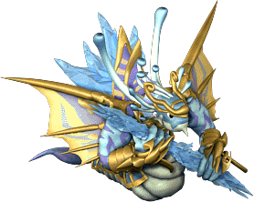
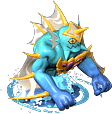
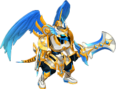
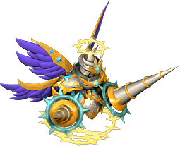
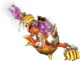
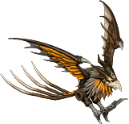
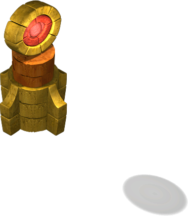
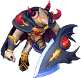
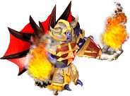
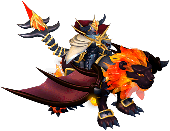

善之地下城
帕爾塞斯
- 帕爾塞斯1
 夏莫可（黃）、斯特納（綠）、［夏莫可］
夏莫可（黃）、斯特納（綠）、［夏莫可］- 帕爾塞斯2
- 夏莫可（藍）、斯特納（綠）、［夏莫可］
- 帕爾塞斯3
- 夏莫可（紅）、斯特納（黃）、 [斯特納]
- 帕爾塞斯4
- 斯特納（綠）、［斯特納］、
 安提拉凱農（綠）
安提拉凱農（綠） - 帕爾塞斯5
- 斯特納（黃）、安提拉凱農（綠）、［安提拉凱農］
- 帕爾塞斯6
- 斯特納（紅）、安提拉凱農（藍）、［安提拉凱農］
- 帕爾塞斯7
- 夏莫可（紅）、斯特納（紅）、安提拉凱農（紅）
- 帕爾塞斯獎勵1
- 夏莫可（黃）、夏莫可（藍）、［夏莫可］、斯特納（綠）
- 帕爾塞斯獎勵2
- 夏莫可（紅）、斯特納（綠）、斯特納（黃）、 [斯特納]、安提拉凱農（綠）
- 帕爾塞斯獎勵3
- 斯特納（黃）、[斯特納]、斯特納（紅）、安提拉凱農（藍）、［安提拉凱農］、蘭塞亞
庫修隆
- 克修倫1
 珍珠貝（白）、傑拉西（紅）、傑拉西（紫）、吉恩特（茶）
珍珠貝（白）、傑拉西（紅）、傑拉西（紫）、吉恩特（茶）- 克修倫2
- 珍珠貝（白）、傑拉西（紅）、傑拉西（紫）、吉恩特（紫）
- 克修倫3
- 珍珠貝（紫）、［傑拉西］、
 吉恩特（茶）、
吉恩特（茶）、 特里奧頓（橙）、
特里奧頓（橙）、 戈爾刺魟（紅）
戈爾刺魟（紅） - 克修倫4
- 珍珠貝（紫）、
 海鬱金香（紫）、［傑拉西］、吉恩特（紫）、特里奧頓（茶）、戈爾刺魟（茶）
海鬱金香（紫）、［傑拉西］、吉恩特（紫）、特里奧頓（茶）、戈爾刺魟（茶） - 克修倫5
- 珍珠貝（紅）、海鬱金香（藍）、傑拉西（藍）、［吉恩特］、［特里奧頓］、里帕圖（紅）
- 克修倫6
- 珍珠貝（茶）、海鬱金香（紅）、吉恩特（紅）、［特里奧頓］、［戈爾刺魟］、里帕圖（紫）
- 克修倫7
- 珍珠貝（藍）、海鬱金香（橙）、［傑拉西］、吉恩特（紅）、［特里奧頓］、戈爾刺魟（綠）、［里帕圖］
- 庫修隆獎勵１
- 珍珠貝（白）、海鬱金香、傑拉西（紅）、傑拉西（紫）、特里奧頓、戈爾刺魟（紅）
- 庫修隆獎勵２
- 珍珠貝（紅）、海鬱金香（藍）、傑拉西（紫）、[傑拉西］、吉恩特（紫）、［吉恩特］、特里奧頓（茶）、戈爾刺魟、里帕圖（紅）
- 庫修隆獎勵３
- 珍珠貝（藍）、海鬱金香（橙）、傑拉西（藍）、［傑拉西］、吉恩特（紅）、特里奧頓(紅)、戈爾刺魟、里帕圖（紫）、

巴哈姆特
盧米納
- 諾拉克號
 樹精
樹精- 盧米納神殿碼頭
 阿努比亞斯
阿努比亞斯- 露米娜神殿1樓
 巨齒鯊砲、阿努比亞斯、烏爾許萊因
巨齒鯊砲、阿努比亞斯、烏爾許萊因- 覲見之間1
- 德里亞德、巨齒鯊砲、烏爾許萊因
- 覲見之間2
- 謝爾克里普、［巨齒鯊砲］
- 覲見之間3
- ［阿努比亞斯］、
 帕斯托爾
帕斯托爾 - 露米娜神殿2樓
 爬行貝
爬行貝- 懺悔室1
- 德里亞德、卡皮奧、［烏爾許萊因］
- 懺悔室2
- ［德里亞德］、卡皮奧、帕斯托爾
- 懺悔室3
- 阿努比亞斯、［卡皮奧］、［帕斯托爾］
- 懺悔室4
- 卡皮奧、［謝爾克里普］、［帕斯托爾］、［烏爾許萊因］
- 盧米納神殿1樓(魔王區)
- 德里亞德、巨齒鯊砲、阿努比亞斯、阿塞拉
- 露米娜獎勵關1
- 露米娜獎勵關2
- 露米娜獎勵關3
莉希涅
- 莉希涅1
- 鳥身女妖之卵、鳥身女妖、［鳥身女妖］、
 水之精靈
水之精靈 - 莉希涅2
- 鳥身女妖之卵、［鳥身女妖］、血腥鳥身女妖、

突變水之精靈 - 莉希涅3
- 鳥身女妖之卵、［鳥身女妖］、血腥鳥身女妖、［血腥鳥身女妖］、純淨鳥身女妖、［水之精靈］
- 莉希涅要塞1
 莉希涅守衛、羅剎聖天使瓦爾基里、
莉希涅守衛、羅剎聖天使瓦爾基里、 莉希涅水晶、神聖歐貝爾
莉希涅水晶、神聖歐貝爾- 莉希涅要塞2
- 天使瓦爾基里、莉希涅大師守衛、莉希涅水晶、神聖歐貝爾、［神聖歐貝爾］
- 莉希涅要塞3
- 莉希涅皇家守衛、蒼天聖天使瓦爾基里、莉希涅水晶、［神聖歐貝爾］、

神聖靈魂毀滅者、
天使之翼守護者 - 莉希涅聖光之門
- 聖天使瓦爾基里領主、莉希涅水晶、［神聖歐貝爾］、［神聖靈魂毀滅者］、天使之翼守護者（紅）、天使之翼守護者（綠）、蒼炎聖天使提奧
惡之地下城
斯坎達倫
- 斯坎達倫1
- 馬斯基普（藍）、［馬斯基普］、天空米格爾（綠）
- 斯坎達倫2
- 馬斯基普（綠）、［馬斯基普］、天空米格爾（綠）
- 斯坎達倫3
- 馬斯基普（紅）、天空米格爾（藍）、［天空米格爾］
- 斯坎達倫4
- 阿米拉姆（綠）、天空米格爾（綠）、［天空米格爾］
- 斯坎達倫5
- 天空米格爾（藍）、阿米拉姆（綠）、［阿米拉姆］
- 斯坎達倫6
- 天空米格爾（紅）、阿米拉姆（藍）、［阿米拉姆］
- 斯坎達倫7
- 馬斯基普（紅）、天空米格爾（紅）、阿米拉姆（紫）
- 斯坎達倫獎勵1
- 馬斯基普（藍）、馬斯基普（綠）、［馬斯基普］、天空米格爾（綠）
- 斯坎達倫獎勵2
- 馬斯基普（紅）、天空米格爾（綠）、天空米格爾（藍）、［天空米格爾］、阿米拉姆（綠）
- 斯坎達倫獎勵3
- 天空米格爾（藍）、天空米格爾（紅）、阿米拉姆（綠）、
- 阿米拉姆（藍）、［阿米拉姆］、
 安德拉斯
安德拉斯
歐費爾
- 歐佩爾1
 寶箱（紅）、
寶箱（紅）、
地獄火（白）、地獄火（綠）、烈焰尾（黑）- 歐佩爾2
- 寶箱（紅）、地獄火（白）、地獄火（綠）、烈焰尾（紫）
- 歐佩爾3
- 寶箱（紫）、［地獄火］、烈焰尾（黑）、岩漿狂人（水藍）、縱火狂（黃）
- 歐佩爾4
- 寶箱（紫）、熔岩手（紅）、［地獄火］、烈焰尾（紫）、岩漿狂人（藍）、縱火狂（茶）
- 歐佩爾5
- 寶箱（藍）、熔岩手（藍）、地獄火（紅）、［烈焰尾］、［岩漿狂人］、

火焰鳥（紅） - 歐佩爾6
- 寶箱（綠）、熔岩手（橙）、烈焰尾（紅）、［岩漿狂人］、［縱火狂］、火焰鳥（紫）
- 歐佩爾7
- 寶箱（橙）、熔岩手（綠）、［地獄火］（黑）、烈焰尾（紅）、岩漿狂人（紫）、縱火狂（紅）、［火焰鳥］
- 歐費爾獎勵１
- 寶箱（紅）、熔岩手（白）、地獄火（白）、地獄火（綠）、烈焰尾（黑）、烈焰尾（紫）、岩漿狂人（水藍）、縱火狂（黃）
- 歐費爾獎勵２
- 寶箱（藍）、熔岩手（藍）、地獄火（綠）、［地獄火］、烈焰尾（紫）、［烈焰尾］、岩漿狂人（藍）、火焰鳥（紅）
- 歐費爾獎勵３
- 寶箱（橙）、熔岩手（綠）、地獄火（紅）、［地獄火］（黑）、烈焰尾（紅）、［岩漿狂人］、縱火狂（茶）、火焰鳥（紫）、沙羅曼蛇
蓋赫那
- 格亨納陸橋
 廢墟鳳凰
廢墟鳳凰- 格亨納入口
 鋼鐵狂戰士、瘋人
鋼鐵狂戰士、瘋人- 格亨納1樓大廳
- 鋼鐵狂戰士、
 狂信者、
狂信者、 骷髏守衛
骷髏守衛 - 格亨納2樓監獄
- 瘋人、狂信者、廢墟鳳凰、骷髏守衛、骷髏大師
- 格亨納3樓監獄

守衛塔、［瘋人］、 地獄三頭犬、骷髏騎士、暗黑賢者
地獄三頭犬、骷髏騎士、暗黑賢者- 格亨納4樓監獄
- 守衛塔、［廢墟鳳凰］、鋼鐵狂戰士、［地獄三頭犬］、［骷髏大師］、暗黑賢者
- 格亨納5樓監獄
- 地獄三頭犬、［狂信者］、［骷髏大師］、守衛塔、［暗黑賢者］
- 格亨納6樓監獄
- 地獄三頭犬、暗黑賢者
- 蓋赫那5樓監獄(魔王區)
- 鋼鐵狂戰士、瘋人、廢墟鳳凰、提亞居
- 格亨納獎勵關1
- 寶箱、鋼鐵狂戰士、狂信者、廢墟鳳凰、地獄三頭犬、骷髏守衛、骷髏大師
- 格亨納獎勵關2
- 鋼鐵狂戰士、狂信者、廢墟鳳凰、瘋人、[地獄三頭犬]、骷髏守衛、骷髏騎士、暗黑賢者
- 格亨納獎勵關3
- 鋼鐵狂戰士、[狂信者]、[瘋人]、[廢墟鳳凰]、地獄三頭犬、[骷髏大師]、[暗黑賢者]、提亞居
戴莫尼翁
- 戴莫尼翁1
 石像鬼雕像、
石像鬼雕像、 石像鬼、邁亞精靈
石像鬼、邁亞精靈- 戴莫尼翁2
- 石像鬼雕像、克魯奧爾石像鬼、［石像鬼］、突變邁亞精靈
- 戴莫尼翁3
- 石像鬼雕像、克魯奧爾石像鬼、［克魯奧爾石像鬼］、［邁亞精靈］、石像鬼雕像、布倫吉特石像鬼、［戴莫尼翁］結界
- 戴莫尼翁堡壘1
- 戴莫尼翁水晶、暗黑歐貝爾、

戴莫尼翁守衛、冥界墮天使瓦爾基里 - 戴莫尼翁堡壘2
- 戴莫尼翁水晶、［暗黑歐貝爾］、戴莫尼翁大師守衛、墮天使瓦爾基里
- 戴莫尼翁堡壘3
- 戴莫尼翁水晶、戴莫尼翁皇家守衛、暗黑墮天使瓦爾基里、

黑暗靈魂毀滅者、暗黑之翼守護者（紅） - 戴莫尼翁神聖之門
- 戴莫尼翁水晶、墮天使瓦爾基里領主、[黑暗靈魂毀滅者]、暗黑之翼守護者（黑）、暗黑之翼守護者（黃）、

漆黑之闇德拉菲斯
留言欄（不擅長編輯Wiki的人請寫在這裡）
沒有留言。留言/MonsterListMap03?
- &#